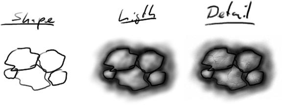
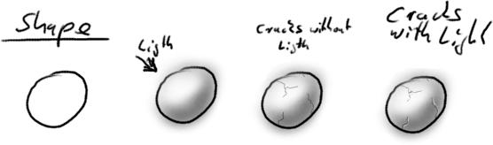
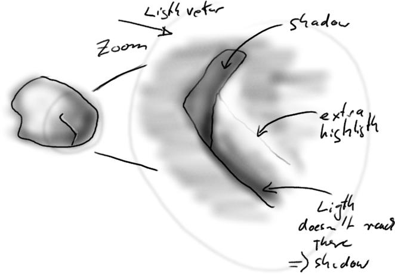
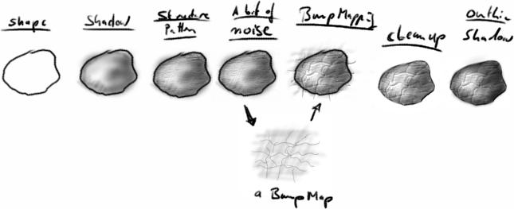
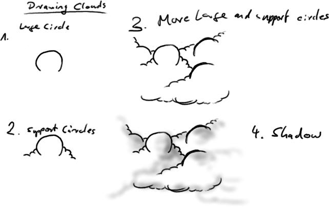
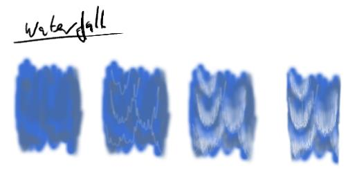
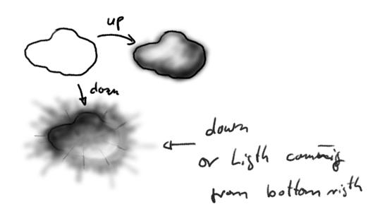

The following is a very little guide to drawing, or more specific my style and technique of drawing. It will not tech you much about drawing in general, but should give you an insigned on how I draw.
I seldomly paint stuff with much of a vision in my head, its more a construction thing I do, i.e. I paint a shape, add shadows and details and tweaking all that a bit until it looks good. I don't know how it will look before I start, I develop the look in the process of creating it. Its really just connecting a few procedures together.

The above picture shows the three basic steps, I don't do them in that strickt order of course, I go forward and backward throught that order until it looks good, but these three steps are basically with what I start.

To paint the little cracks into the rock you simply start again with the shape, shadow, detail process. The shape is just a black line this time, as the third image demonstrates. The light that gets added is a white line, but it only gets added in those parts that face the lightsource, i.e. every part of the black line that faces the lightsource gets a additional small white strip and the rest stays untouched. The image below shows this in a 'zoom'.




